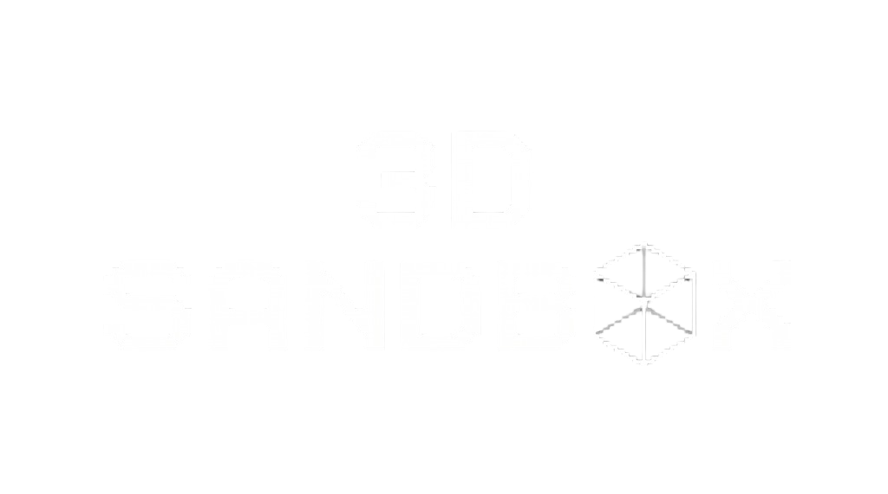

3D SANDBOX
Физическая песочница с P2P мультиплеером
Одиночная игра со свободным строительством и сетевой режим по комнатам. Физика твёрдых тел, инструмент переноски, Tool Gun для сварки и удаления объектов, оружие и настраиваемый скайбокс в стиле классических ретро-игр.
СКАЧАТЬ УСТАНОВЩИК
3D-Sandbox-Setup.exe • ~123 МБ
Прямая загрузка без сторонних клиентов и регистрации
Превью игры

[ КАРТА: BASEPLATE 512x512 ]
Классическая платформа, физика кубов и сфер, вид от 1-го лица, Tool Gun и динамический скайбокс Old Roblox.
0%
Инпут-лаг
P2P
До 10 игроков
60+
FPS на Baseplate